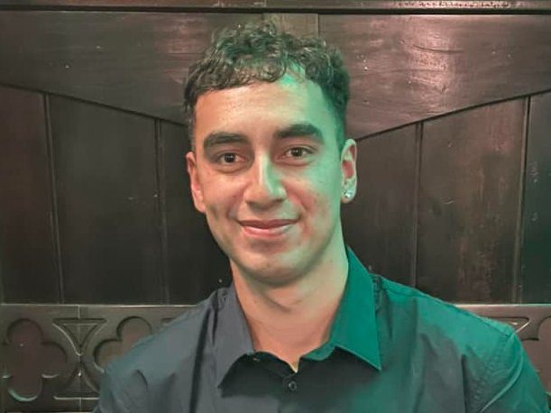

Men's First Team
Our First Team
Our flagship senior men's side competing in the WaiBOP regional football structure.
The First Team represents the highest level of men's football at Ngongotahā.
Ngongotahā's senior football programme is built around competitive football, strong standards and giving players the opportunity to compete across three senior teams.
Following the 2026 season, Ngongotahā's Men's First Team enters a new chapter in the WaiBOP regional football structure for 2027.
The focus remains the same: compete, develop and build a First Team capable of representing Ngongotahā with pride and ambition.
With the national football structure changing from 2027, the regional leagues will form an important part of the pathway for clubs competing to reach the new national level.
New Zealand Football is introducing a new fully national, club-based men's competition from 2027.
The new Dettol National League will feature 12 men's clubs in a full winter league, followed by a finals series and Grand Final.
For Ngongotahā, the 2027 season begins in the WaiBOP regional competition as we work towards building the next chapter of senior football at the club.
Our flagship senior men's side competing in the WaiBOP regional football structure.
The First Team represents the highest level of men's football at Ngongotahā.

Ngongotahā also fields two competitive Bay League sides, giving more players the opportunity to play senior football.
Bay 1 provides competitive senior football, while Bay 4 is our Over 35s and social side.
Our senior football programme is supported by a dedicated coaching team focused on developing players and maintaining high standards across the club.

Head Coach
UEFA B-Licensed coach focused on strategy, performance and player development.

Assistant Coach
Supports tactical planning, training and individual player development.

Senior Coach
Focuses on player development and supporting the senior football programme.

Assistant Coach
Assists with training, strategy and player mentorship across the senior programme.
Leading goal scorers for the Ngongotahā Men's First Team.
Arno Greyling
5 goals
Olly Atkinson
3 goals
Harshay Kumar
3 goals
Our two Bay teams are an important part of Ngongotahā's senior football programme, providing competitive football for players across different ages and levels.
Bay 1 competes in the Bay League, while our Bay 4 side operates as our Over 35s and social team.
Whether you're looking to compete with the First Team, play competitive Bay football or be part of our Over 35s and social side, Ngongotahā AFC has a place for you.
Registrations